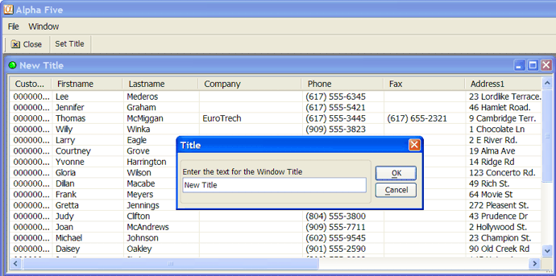

ListView Control on MDI Xdialog
This Xdialog box script displays a MDI child window with a List View control in it. The script assumes that you have created a toolbar named MDI_test, and a menu named MDI_test.

The toolbar should have at least two buttons named "Set Title" and "Close". The event for the "Set Title" button should be "Internal Action" and the event name should be "set_title". The event for the "Close" button should be "Close".
The menu has two commands, File > Set window title, and File > Close.
The xdialog menu string for this menu is:
File|{DATA=command:set_title}Set window title File|{DATA=command:close}Close window |
Notice that the menu action for each of these menu items is the same as for their corresponding action in the toolbar. This script shows that it is possible to launch multiple instances of the MDI child window. Each instance operates independently of the other.
The key to the way in which the toolbar and menu events get executed is the function ((|#event_handler|command()))defined at the end of this script. This function sends the events to the Xdialog box.
title_var_name = "title_var"+stritran(time(),":","_") eval(title_var_name) = "Dialog Title" dlg_title = "@="+title_var_name |
We register a new MDI window class with A5_MDI_WINDOWCLASS_ADD() so that it appears in the Window menu and the Window menu bar. This function takes three arguments: the class name, the class description, and the class icon.
a5_mdi_windowclass_add("mymdiclass","My Special MDI Window Type","A5_ball_green") |
This is the event handler string for the top menu.
dim event_string as C event_string = <<%code% if left(a_command,3) = "A5." then a5.command(substr(a_command,4) ) a_command = "" else if left(a_command,1) = "!" then evaluate_template(substr(a_command,2) ) a_command = "" else if left(a_command,6) = "addin:" then evaluate_template(substr(a_command,7) ) else if left(a_command,8) = "command:" then ui_dlg_event(dlg_title,substr(a_command,9) ) else if .not. ("|" $ a_command) then this.command(a_command) a_command = "" end if %code% dim menu_string as C menu_string = a5_menu_def_load("MDI_test") dim toolbar_string as P toolbar_string = a5_toolbar_def_load("mdi_test") dim message as C message = "This is a standard MDI child window. It can be maximized, minimized, resized, or restored." |
Here is where we define the ListView control. The code shown here was originally generated by Action Scripting (choose the "Display an Xdialog Box" action and place a ListView control on the Xdialog).
When the ListView control is hosted in a MDI window the lv variable must be a local variable. After the Action Scripting code was converted to Xbasic the shared keyword was removed.
DIM lv_FuncCode as C = <<%CodeFunctions% FUNCTION DoSort as V (byref CurrentSortField as C, byref CurrentSortDirection as C, NewSortField as C, Filter as C, pLV as P, rs as P ) DIM cResult as C DIM SortDirection as C DIM SortField as C IF NewSortField = CurrentSortField ' clicked on same field, reverse sort IF CurrentSortDirection = "D" CurrentSortDirection = "A" ELSE CurrentSortDirection = "D" END IF ELSE CurrentSortField = NewSortField CurrentSortDirection = "A" END IF SortDirection = CurrentSortDirection SortField = CurrentSortField IF SortDirection = "D" SortField = "invert(" + SortField + ")" END IF ' actual sorting code goes here pLV.RowView.Close() pLV.RowView = rs.OpenView(1, SortField, Filter) DoSort = cResult END FUNCTION %CodeFunctions% |
DIM lv_Funcs as P = compile_template(lv_FuncCode) DIM lv as C DIM lv_CurrentSortField as C = "" DIM lv_CurrentSortDirection as C = "A" DIM lv_Filter as C DIM lv_pTableDef as P DIM lv_pTableDef.ReturnValueExpression as C = "Customer_id" |
DIM lv_pTableDef.FieldList as C = <<%txt% Customer_id Firstname Lastname Company Phone Fax Address1 Address2 City State Zip %txt% |
DIM lv_pTableDef.TitleRow as C = "{AUTOSIZE}Customer_id|{AUTOSIZE}Firstname|{AUTOSIZE}Lastname|{AUTOSIZE}Company|{AUTOSIZE}Phone|{AUTOSIZE}Fax|{AUTOSIZE}Address1|{AUTOSIZE}Address2|{AUTOSIZE}City|{AUTOSIZE}State|{AUTOSIZE}Zip" DIM lv_pTableDef.TableName as C = "clients" DIM lv_pTableDef.Filter as C = "(recno()> 0)" ' recno()> 0 is required in order to avoid showing deleted variables DIM lv_pTableDef.Order as C = "" lv_pLV.titlerow = lv_pTableDef.titlerow lv_pLV.titleevents = "lv_Sort_Customer_id|lv_Sort_Firstname|lv_Sort_Lastname|lv_Sort_Company|lv_Sort_Phone|lv_Sort_Fax|lv_Sort_Address1|lv_Sort_Address2|lv_Sort_City|lv_Sort_State|lv_Sort_Zip" lv_pLV.style = "report,singlesel,showselalways,gridlines,fullrowselect" lv_pLV.dragbehaviour = "" lv_pLV.dropbehaviour = "" DIM lv_t as P DIM lv_rr as Alpha5::RowRelation DIM lv_rs as P IF .NOT. file.exists(table.filename_get(lv_pTableDef.TableName)) END END IF lv_t = table.open(lv_pTableDef.TableName, FILE_RO_SHARED) lv_t.persist() lv_rs = lv_rr.TableToRowSource(lv_t) lv_Filter = lv_pTableDef.Filter lv_pLV.rowview = lv_rs.OpenView(1,lv_pTableDef.Order,lv_Filter) lv_pLV.RowSeparator = crlf() lv_pLV.ColumnSeparator = "|" lv_pLV.Key = lv_pTableDef.ReturnValueExpression lv_pLV.Columns = lv_pTableDef.FieldList lv_pLV.events = <<%code% |
function OnRightClick as c(lv as p,listView as p,args as p) WITH lv listView.Selection = listView.GetRowValue(args.GetClickRow() ) on 'to call a function outside the events code, you must use the ui_dlg_eval() function 'menu = ui_dlg_eval(dlg_title,"a5wcb_PublishRclick(selectedFilename)") END WITH end function |
function OnDoubleClick as c(lv as p,listView as p,args as p) WITH lv lv = listView.GetRowValue(args.GetClickRow() ) END WITH end function |
FUNCTION on WITH lv lv = listView.Selection END WITH END FUNCTION |
FUNCTION on DIM key as C Dim KeyName as C key = args.GetKeyName() KeyName = key IF key = "{Delete}" .OR. key = "{Num Del}" KeyName = "{Delete}" ELSE IF args.keycode = 13 ' enter KeyName = "{Enter}" ELSE IF args.keycode = 8 ' backspace KeyName = "{Backspace}" END IF END FUNCTION %code% |
This ends the definition of the ListView control. In the Xdialog, we have added the {stretch} command so that the ListView changes size when the MDI window is resized.
ui_modeless_dlg_box(dlg_title,<<%dlg% {icon=A5_ball_green} {mdichild=mymdiclass} {stretch=height,width} {listviewvirtual=150,20lv^=lv_pLV}; {watch=lv!foo}; {on_activate=activate} {on_deactivate=deactivate} %dlg%,<<%code% if a_dlg_button = "set_title" then title = ui_get_text("Title","Enter the text for the Window Title") if title <> "" then eval(title_var_name) = title end if end if if a_dlg_button = "activate" then 'show the toolbar dim pDummy as p pDummy.dummy = "" toolbar_name = a5_system_toolbar_show(pDummy,toolbar_string) 'show the menu. the ui_expand_branches() function is used to expand certain menu 'macros' (such as recent file list, or window list) at runtime. ui_top_menu(ui_expand_branches(menu_string),event_string) end if if a_dlg_button = "deactivate" then 'before closing the toolbar we check to see if it still exists -- the user could have undocked the toolbar and closed it before closing the dialog box. if ui_modeless_dlg_exist(toolbar_name) then ui_modeless_dlg_close(toolbar_name) end if end if if a_dlg_button = "title_change" then eval(title_var_name) = title end if if a_dlg_button = "close" then ui_modeless_dlg_close(dlg_title) end if IF left(a_dlg_button, len("lv_Sort_") ) = "lv_Sort_" DIM NewSortField as C NewSortField = substr(a_dlg_button, len("lv_Sort_")+1) lv_Funcs.DoSort(lv_CurrentSortField, lv_CurrentSortDirection, NewSortField, lv_Filter, lv_pLV, lv_rs) a_dlg_button = "" END IF IF a_Dlg_button = "lv_refresh" a_dlg_button = "" lv_pLV.RowView.Close() lv_pLV.RowView = lv_rs.OpenView(1, lv_CurrentSortField, lv_Filter) END IF IF a_dlg_button = "foo" a_dlg_button = "" ' do nothing END IF %code%) |
This is the event handler for the toolbar.
FUNCTION command as v ( vars as p,command as c ) ' with vars if left(command, 6) = "event:" then command = substr(command,7) end if ui_dlg_event(dlg_title,command) command = "" end with END FUNCTION |
See Also
MDI Xdialog Framework, {LISTVIEWVIRTUAL}
Limitations
Desktop applications only